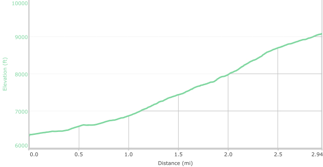

Agua Sarca Trail



- Oct 26, 2013: Looking west a short way up
- Jun 23, 2015: Bill at the trailhead
- Jun 23, 2015: Early on - always up
- Jun 23, 2015: Also a pile of rocks left behind
- Jun 23, 2015: Peeping through the firs
- Jun 23, 2015: The misty Ortiz
- Jun 23, 2015: At the juncture w\/North Crest Trail
- https://www.flickr.com/photos/139088815@N08/24827240751/in/photostream/
- https://www.flickr.com/photos/139088815@N08/24625111430/in/photostream/
- https://www.flickr.com/photos/139088815@N08/24894298766/in/photostream/
- https://www.flickr.com/photos/139088815@N08/27349578726/in/photostream/
- https://www.flickr.com/photos/139088815@N08/24802665482/in/photostream/
- https://www.flickr.com/photos/139088815@N08/24827270361/in/photostream/
- https://www.flickr.com/photos/139088815@N08/24802642372/in/photostream/
A good reference, with GPS waypoints, is provided by the Sandia Mountain Hiking Guide by Mike Coltrin. The hike is rated "Difficult", and it truly is -- not owing to the length, or even the elevation change, but due to the relentless steepness of the trail. There are not many vistas along the way, the altitude can be challenging, and coming down is a constant stress on the lower legs. This was definitely, for the author, a one-time hike! Nonetheless, it is a good workout for the enterprising. That same author provides good online information at his Agua Sarca site. The Agua Sarca canyon is an impressive site from any angle.